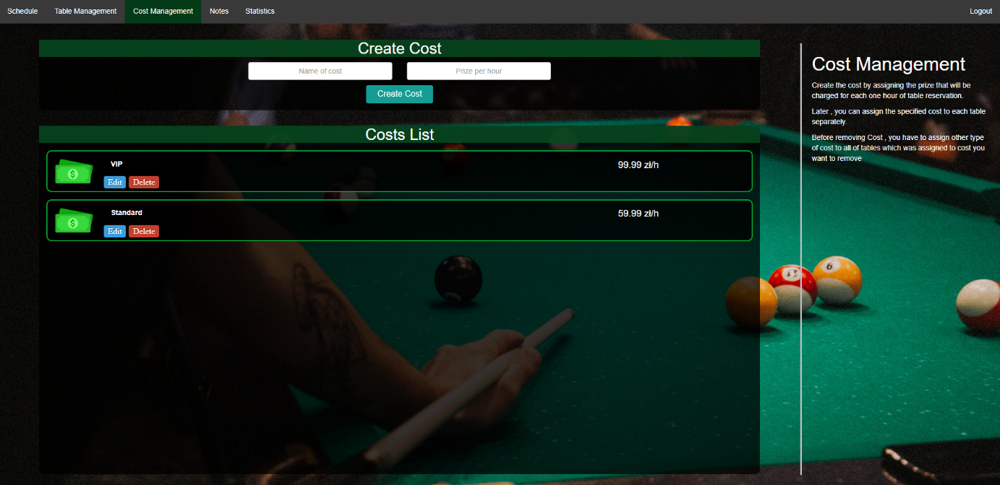
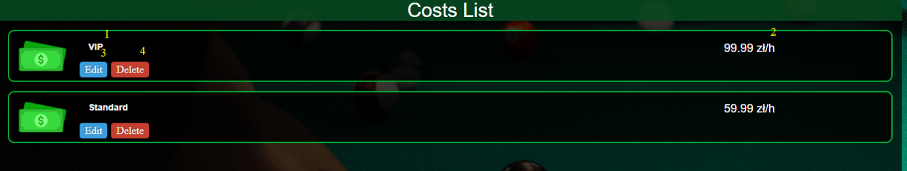
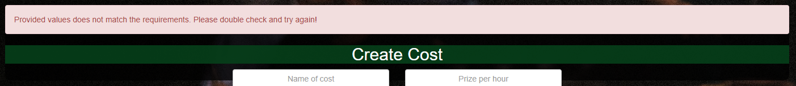

Zarządzanie kosztami
Pierwszym krokiem w zarządzaniu rezerwacjami jest utworzenie kosztu. Są one wykorzystywane do naliczania kwoty jaka ma być pobierana za godzinę użytkowania stołu.
Koszt można utworzyć poprzez wypełnieniu formularza zawartego w oknie
"Create Cost" oraz po potwierdzeniu przyciskiem o tej samej nazwie

Rys. 10 | Cost Management - widok panelu
Rys. 11 | Tworzenie kosztu
Poprawnie utworzony koszt pojawi się w oknie ‘Costs List’. W niej znajduje się lista wszystkich kosztów. Z jej poziomu można także edytować i usunąć stworzony koszt.

Rys. 12 | Lista kosztów
Rys. 13 | Edycja kosztu
W przypadku źle wprowadzonych danych bądź innych błędów na górze strony pojawi się okno z błędem:

Rys. 14 | Przykładowy błąd podczas dodawania kosztu